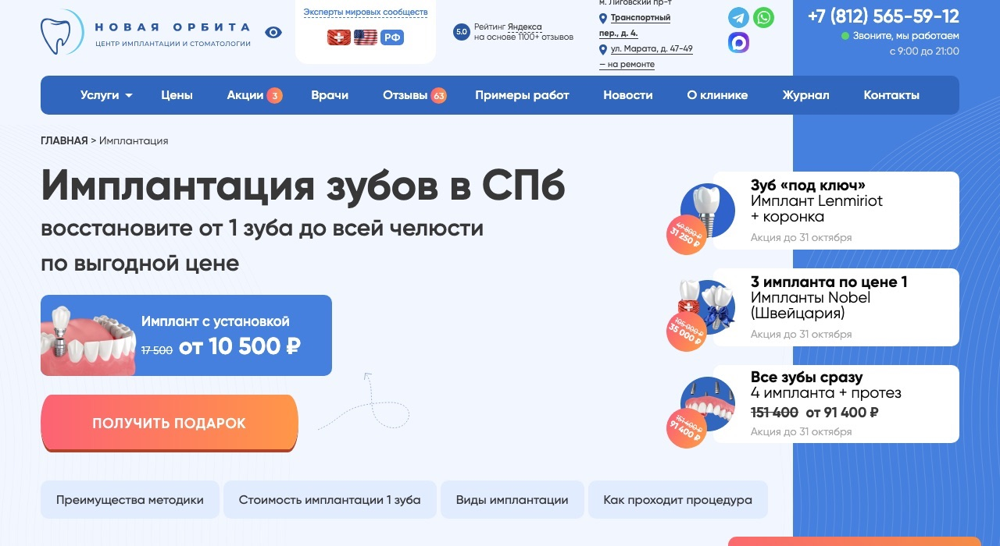

30+новых платных подписок на сервис в неделю, TeleGraphyx
1
Обо мне
Контент-маркетолог и руководитель контент-маркетинга. За 7 лет в digital прошёл путь от копирайтера до руководителя контент-направления в маркетинговом агентстве.
Работал в B2B и B2C: SaaS, финтех, EdTech, e-commerce, HR и консалтинг, строительство, недвижимость, медицина. Строю контент как систему привлечения клиентов, где каждый материал ведёт к заявке.
Стратегия
Исследование аудитории и конкурентов, позиционирование, УТП, офферы и контент-план
Воронки
Лид-магниты, прогревы, сценарии взаимодействия с аудиторией и связка контента с рекламой
Контент
Лендинги, SEO-статьи, email-цепочки, посты и экспертные материалы
Аналитика и рост
Метрики, конверсия, контроль качества и оптимизация контент-маркетинга
2
Кейсы с цифрами
Задача, система и результат в цифрах.
Медицина · контент-маркетинг
+51% заявок с сайта и 150+ записей из блога за полгода
Стоматология «Новая Орбита», Санкт-Петербург
neworbita.ru/uslugi/implantation

Страница имплантации после перезапуска
Превратил сайт клиники в канал записи: страницы услуг, блог и Директ работают как одна воронка до консультации
Перестроил страницы услуг вокруг страхов пациента: +17% заявок уже в первый месяц
Связал контент и рекламу: 40+ экспертных статей и офферы под сегменты аудитории подняли CTR в Директе на 25–30%
39 подключённых магазинов за 12 дней: 4 письма пользователям бесплатного расширения
Yoolip, аналитика для продавцов Ozon и Wildberries · 2026
1 750пользователей расширения
≈120перешли по ссылкам
39подключили магазин, каждый третий из перешедших
Нашёл точку роста в собственной базе: перевёл пользователей бесплатного расширения к ключевому действию, подключению магазина
Построил цепочку на Jobs to be Done: ценность продукта переносится с одного товара на весь бизнес селлера, а темы на страхе потери открыли 42% и 39% получателей
Последовательно снял барьеры к подключению (время, безопасность, цена): кликабельность выросла до 3,0%, магазин подключил каждый третий перешедший
1,17 млн ₽ на двух воркшопах: воронка в боте, ИИ-менеджер и бесплатный марафон
TGX, онлайн-школа по продвижению в Telegram · май–август 2025
Выстроил автоворонку продаж в Telegram на доверии к практикам: первый воркшоп купили 142 человека на 709 тыс. ₽
Автоматизировал продажи в диалоге: ИИ-менеджер квалифицировал заявки с постов и привёл 35% покупателей
Собрал бесплатный марафон как прогрев ко второму воркшопу: вместе с командой продали его за неделю на 464 тыс. ₽, 19% покупателей первого вернулись за вторым